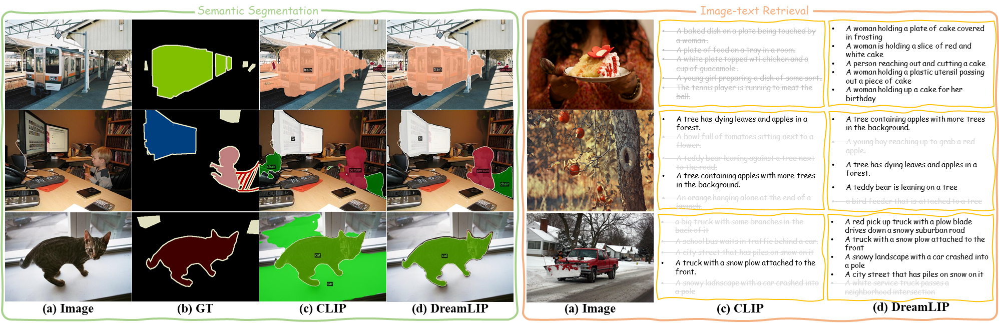
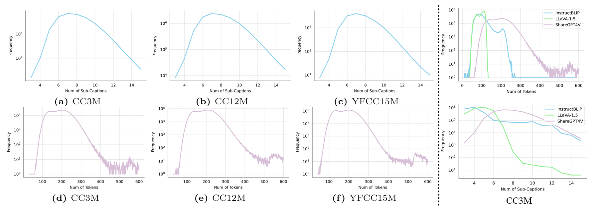

Language-image pre-training largely relies on how precisely and thoroughly a text describes its paired image. In practice, however, the contents of an image can be so rich that well describing them requires lengthy captions (e.g., with 10 sentences), which are usually missing in existing datasets. Consequently, there are currently no clear evidences on whether and how language-image pre-training could benefit from long captions. To figure this out, we first re-caption 30M images with detailed descriptions using a pre-trained Multi-modality Large Language Model (MLLM), and then study the usage of the resulting captions under a contrastive learning framework. We observe that, each sentence within a long caption is very likely to describe the image partially (e.g., an object). Motivated by this, we propose to dynamically sample sub-captions from the text label to construct multiple positive pairs, and introduce a grouping loss to match the embeddings of each sub-caption with its corresponding local image patches in a self-supervised manner. Experimental results on a wide rage of downstream tasks demonstrate the consistent superiority of our method, termed \method, over previous alternatives, highlighting its fine-grained representational capacity. It is noteworthy that, on the tasks of image-text retrieval and semantic segmentation, our model trained with 30M image-text pairs achieves on par or even better performance than CLIP trained with 400M pairs.

Visualization of semantic segmentation and image-text retrieval.
Statistics of long captions.
@article{DreamLIP,
title={AesExpert: Towards Multi-modality Foundation Model for Image Aesthetics Perception},
author={Zheng, Kecheng and Zhang, Yifei and Wu, Wei and Lu, Fan and Ma, Shuailei and Jin, Xin and Chen, Wei and Shen, Yujun},
journal={arXiv:2403.17007},
year={2024}
}